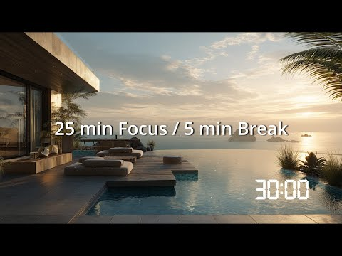

訂正：最初の下書きで「本体の30分動画が1本も無い」と書いたが、これは誤りだった。チャンネルが2つあり（依頼書は片方しか書いていなかった）、もう一方に本体動画が全部揃っていた。実際に両方開いて確認した結果を書き直す。
チャンネルは2つある。
・Zen Focus Timer（@zenfocustimer8787／2025/12/14開設）：本体の30分Pomodoro動画が15本、全部ある（長さは全部30:01で正確、各動画の概要欄にGumroadの該当商品への直リンクも正しく入っている）。累計630回視聴。チャンネル登録者1人。チャンネルの概要欄・リンク欄は空欄（動画を1本ずつ開いた人しかGumroadへ辿れない）。
・OFF — Safe to Disconnect（@OFFSafetoDisconnect／2025/12/28開設）：31秒のショート/予告のみ5本。累計264回視聴（依頼書の数字はこちらだけ）。チャンネル概要欄にGumroadリンクあり。
2チャンネル合計：動画20本・視聴894回。8か月間、両方とも新規投稿ゼロ。
低視聴の実際の理由：
a) 8か月間、完全に投稿が止まっている（全動画が『8か月前』のまま）
b) 本体動画があるチャンネルの入口（概要欄・リンク）が空欄で登録者1人。動画を偶然踏んだ人しか商品に辿り着けない
c) チャンネルが2つに分裂していて、片方で貯めた視聴・登録がもう片方に効かない
d) 競合上位は2〜4時間ループ（30分を1セットとして複数連結）が主流。こちらは単発30分のみで『次も見る』動機が弱い（比較検索は下記）
e) 英語タイトルのみ。日本語ポモドーロチャンネル（Timer Palette等）は16万〜300万再生と好調で、日本語需要を取りこぼしている
良かった点（正直に）：動画のサムネイル自体は悪くない。実際に開くと『25 min Focus / 5 min Break』『30:00』とタイマー情報が写真に重ねてあり、競合と遜色ない作り（比較画像を参照）。サムネではなく、その動画へ辿り着く経路が無いのが問題。
YES。YouTube上位は数十万〜300万視聴、Lofi Girlの代表動画は1億3千万視聴。Gumroad側も類似コンセプトの個人商品が実在する：
・「Deep Focus: Ocean Waves (A 45 Minute Work Timer)」$1.74
・「Pomodoro Timer - Dark Academia & Vintage Theme」$0.99
市場相場は$1前後〜数ドル。
総合 4〜5/10（訂正：Vol毎に絵も環境音も実際に違う一点は良品質。Vol.2は雨音、Vol.7は熱帯雨林、Vol.9は波音と、説明文レベルで確認済み。『中身が同じなのに同じと書いていない』というDispatchの当初の懸念は、実際の商品説明文には該当なし＝誇大表示ではなかった）
・OFFチャンネル→Gumroad：つながっている（概要欄にリンクあり）。
・Zen Focus Timer（本体動画があるほう）→Gumroad：動画単位ではつながっている（概要欄に直リンクあり、実測確認済み）が、チャンネル自体の入口（about・リンク欄）は空欄でここが最大の穴。
・2チャンネル間の相互リンク：無い。OFFの視聴者はZen Focus Timerの本体動画の存在を知りようがない。
・ごきげん補給所：つながっていない。
たまごさんとGemini/ChatGPTの過去の壁打ちに、既に以下が決まっている：
・Pomodoro動画＝表（集客用）、OFF＝裏（休息用の出口）という役割分担
・価格3階層：単品$9／バンドル(Vol.1-5)$25／コンプリート$45
・YouTubeは『試食コーナー』、ショートは無言＋固定コメントでGumroad誘導
・ガムロードのアカウントは分けなくてよい（うんこバウンス等の他商品と同居可）
今回の査定はこの既存方針を前提に、実装とのズレを報告するものであり、ゼロから作り直す提案ではない。

| 確認項目 | 結果 |
|---|---|
| 今夜：Zen Focus Timerチャンネルの概要欄・リンク欄を埋める | 今は空欄。ここにGumroadリンクを入れるだけで、本体動画15本の入口がやっと機能する。最優先 |
| 今夜：2チャンネルを相互リンクする | OFFの概要欄に『本編（30分)はZen Focus Timerチャンネルへ』、Zen Focus Timer側に『短い予告はOFFチャンネルにも』を追記 |
| 今夜：Gumroad商品1枚目の画像にタイマー要素を追加 | YouTube版で既に作ってある『25 min Focus / 5 min Break』『30:00』のテキスト入り版を、Gumroadの1枚目にもそのまま使う（新規制作不要、あるものを使うだけ） |
| 1週間：8か月止まっている投稿を再開する | 1本でいいので新しい動画を出す。100枚超の静止画資産があるので新規制作コストは低いはず。投稿が止まっていること自体が最大の機会損失 |
| 1週間：価格をVaultの既存設計（単品$9/バンドル$25/コンプリート$45）に統一する | 今は$0/$7/$10がバラバラで、既に決めていた3階層案と実装がズレている。決め直さず、その案を実装するだけ |
| 1週間：日本語タイトル・概要欄を併記する | 日本語圏の同ジャンルチャンネル(Timer Palette等)は16万〜300万再生。今は英語のみで日本語需要を取りこぼしている |
| やめたほうがいい：2チャンネル運用のまま新Volを増やし続けること | 登録者・視聴シグナルが分散し続ける。まず相互リンクと入口埋めを先にやってから増やす |
| やめたほうがいい：Vaultの既存設計を無視してゼロから考え直すこと | 価格3階層・概要欄テンプレ・YouTubeの役割分担は既に決まっている。足りないのは実装であって設計ではない |